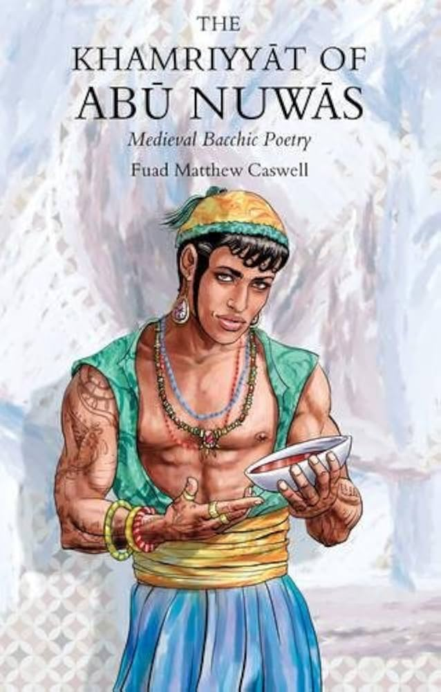

Las mil y una noches
Relato: Aventuras del poeta Abu-Nowas

Ilustración de portada
Ficha del cuento
- Nombre original: Hikāyat Abī Nuwās
- Nombre en español: Aventuras del poeta Abu-Nowas
- Autor: Anónimo
- Año: Siglos IX al XIV
- Publicado en: Las mil y una noches
- Género: Cuento folclórico, anécdota picaresca y humorística, y relato enmarcado
- Tema: El ingenio y la astucia del poeta para sortear el peligro, las juergas, el vino, la sátira y la relación irreverente con el poder y la corte del califa.
- Idioma:Árabe
Escucha la reseña
Toda la información de esta página, narrada en audio.
Personajes principales
Las andanzas del poeta giran en torno a la corte de Bagdad y a las calles y tabernas de la ciudad.
Abu-Nowas
El protagonista; un poeta brillante, bohemio, amante del vino y los placeres, que compensa sus constantes imprudencias con una astucia y rapidez mental extraordinarias.
Harún al-Rashid
El califa de Bagdad; figura de autoridad suprema que oscila entre la furia por las transgresiones de su poeta favorito y la fascinación por su talento e ingenio.
Yafar al-Barmaki
El gran visir y consejero del califa, quien suele acompañarlo en sus recorridos por Bagdad y actúa como testigo o mediador en los enredos del poeta.
El jefe de policía (Wali) y los jóvenes de la taberna
Personajes secundarios que representan el orden público o los compañeros de juerga con quienes Abu-Nowas se mete en problemas.
Resumen
El relato narra las andanzas del célebre poeta de la corte de Bagdad, Abu-Nowas, quien tiene por costumbre burlar las prohibiciones religiosas y las órdenes directas del califa Harún al-Rashid para entregarse a la bebida, la fiesta y la poesía.
En varias ocasiones, el califa (a veces disfrazado mientras recorre la ciudad de noche junto a su visir Yafar) sorprende al poeta en medio de una taberna o en situaciones comprometedoras y ordena su ejecución inmediata o su encarcelamiento. Sin embargo, cada vez que está al borde de la muerte, Abu-Nowas improvisa versos tan agudos, graciosos o conmovedores sobre la situación que logra desarmar el enojo del soberano, convirtiendo su castigo en una recompensa de monedas de oro y el perdón real.
3 enseñanzas del cuento
-
El poder de la palabra y el ingenio.
La inteligencia y la elocuencia pueden sacar a una persona de los peligros más extremos, incluso frente al poder absoluto.
-
La flexibilidad ante el humor.
Incluso las figuras más rígidas y autoritarias (como el califa) valoran la honestidad, la creatividad y la capacidad de reírse de uno mismo.
-
El arte como refugio y libertad.
La poesía funciona como un espacio donde las reglas sociales se suavizan y se perdona la irreverencia cuando va acompañada de verdadero talento.
Ilustraciones de la obra
 Abu-Nowas en la taberna
Abu-Nowas en la taberna
 El califa y el visir recorriendo Bagdad
El califa y el visir recorriendo Bagdad
 Abu-Nowas recita sus versos ante el califa
Abu-Nowas recita sus versos ante el califa
Dónde conseguir el libro
Este relato forma parte de la edición clásica de El libro de las mil noches y una noche